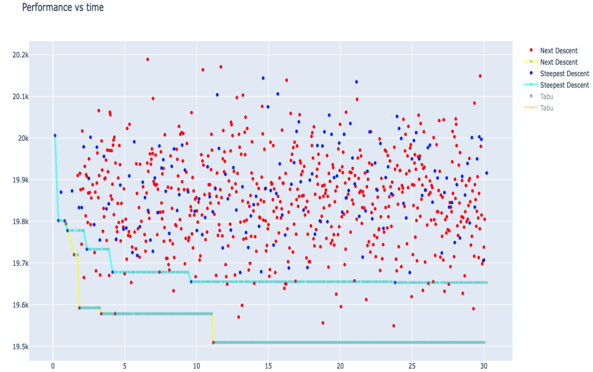
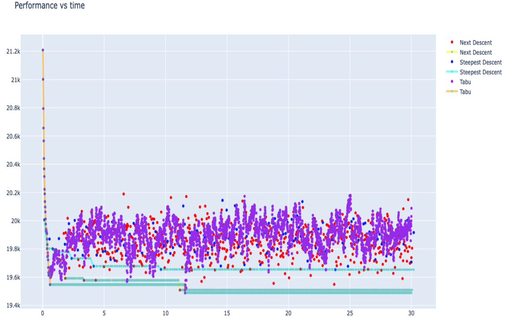

Featured Personal Project: Spotify Song and Artist Recommender
Spotify Song and Artist Recommender
A web application built with Streamlit and Spotipy, allowing users to search for songs and artists based on mood, popularity, and criteria. This project integrates with the Spotify API, demonstrating skills in Python, API integration, and UI development.
View on GitHub Live App (Limited Functionality)Due to privacy reasons, the 'My Liked Songs' and 'View Your Top Artists' sections are disabled in the live app.
University Projects
Honors Project: Brain MRI Implicit Harmonisation
A research-driven initiative focused on developing machine learning and statistical models for implicit harmonization of brain MRI data, addressing inter-site variability in multi-site datasets. The project aimed to enhance the quality of functional MRI input data to improve classification accuracy in detecting Autism Spectrum Disorder (ASD). By leveraging advanced techniques like connectivity matrix harmonization, the project achieved a promising 2% improvement in ASD classification accuracy using the ABIDE I dataset, highlighting the potential of this approach in real-world applications.
Working in the unfamiliar field of medical imaging, I navigated complex challenges that required innovative thinking and a strong technical foundation. The need to bridge my existing expertise with new domain knowledge highlighted my ability to learn quickly and apply machine learning methods effectively in interdisciplinary settings. This experience reflects the rigor and focus I bring to solving difficult problems, ensuring impactful and measurable results even in novel and demanding contexts.
Financial Machine Learning Replication Project
A replication study in financial machine learning focused on reproducing an Out-of-Sample (OOS) R² value using neural networks trained on time-series financial data. The project explored innovative training-validation approaches tailored to the complexities of financial datasets, such as rolling and expanding training windows, to improve monthly OOS predictions. Despite the high noise and variability inherent in financial data, the project provided valuable insights into model performance and limitations, advancing my skills in feature engineering, time-series analysis, and neural network optimization for challenging domains.
The objective was not to achieve the best possible results but to faithfully replicate the findings of the study Economic Trends and Equity Risk Premium by Yufeng Han, Yueliang Lu, and Guofu Zhou. To this end, I implemented a neural network with three hidden layers and ReLU activation, using 14 predictors derived from the study. The process involved manual hyperparameter tuning for L1 penalty values and learning rates, reflecting the need for careful experimentation in financial modeling. Working with time-series data introduced additional challenges, such as the inability to use standard cross-validation or data shuffling, which required tailoring the workflow to preserve temporal integrity. The study also employed a unique R² formula, further emphasizing the importance of aligning implementation details with the original research.

As seen above, this is the ensemble OOS predictions, showcasing the noise and generalization of the final model.
Capstone Project: Wind Turbine Design and Testing
Collaborated as part of a four-member team to design, build, and test a functional wind turbine. This capstone project exemplified the key principles of my BE (Hons) in Engineering Science degree, particularly in computational modeling and analytical thinking. Blade Element Momentum (BEM) theory was used to select airfoils that offered optimal aerodynamic performance, while a genetic algorithm was employed to determine the most efficient blade orientations and design parameters for maximum energy generation.
The project required a systematic approach to problem-solving and effective communication within the team. This was especially crucial for ensuring the blades were manufactured reproducibly, maintaining uniformity across all components. Setting the correct blade setting angle involved precise calculations and testing to ensure performance matched theoretical predictions. Additionally, optimizing blade design parameters using computational tools underscored the importance of combining theoretical knowledge with hands-on engineering.
Post-construction, the turbine underwent rigorous testing across various wind speeds to evaluate its performance metrics, showcasing the practical application of engineering principles to solve real-world challenges. This project highlights my ability to integrate computational optimization techniques, practical problem-solving skills, and effective team collaboration to deliver a tested, high-performing solution.

Above is our group and the turbine prior to testing.
Heuristic Optimization Project: Minimizing Campus Travel
As part of one of my courses, I worked on optimizing campus locations for five faculties and five potential sites. The objective was to minimize the total travel distance for students and staff moving between faculties and their respective locations. This problem required designing and implementing heuristic algorithms to explore potential solutions effectively.
The first task involved coding the Next Descent and Steepest Descent heuristics, both employing the same neighborhood rule. These approaches provided initial insights into solution quality and efficiency. The results are shown below:
Interestingly, Next Descent achieved a lower objective function value compared to Steepest Descent in this case, showcasing the nuances of heuristic performance.
The second task involved implementing the Tabu Search algorithm, incorporating a history of eight moves to escape local optima. This algorithm outperformed both Next Descent and Steepest Descent, delivering superior results as illustrated below:
This project demonstrated my ability to design and compare heuristic optimization algorithms, analyze performance differences, and solve practical problems using computational approaches.
Interactive Dashboard: State Comparison in the USA
During my second year, I developed an interactive R Shiny dashboard as part of a coursework project. The goal was to create a user-friendly tool to visualize how a selected state compared to others across various metrics. The dashboard allows users to:
- Select a specific state from the map.
- Choose variables for the x and y axes to customize the scatter plot.
- Visualize the selected state's position (in red) relative to other states in the dataset.
This project demonstrated my ability to design intuitive interfaces and work with interactive data visualization tools in R. It helped solidify my understanding of data processing, customization of visual elements, and effective presentation of insights to users.
Click the button below to explore the dashboard:
View Dashboard